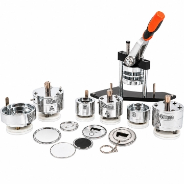

Que crachás estão abrangidos?
Este guia trata de crachás tipo pin/botão montados numa prensa: uma impressão é reunida com uma frente, uma película e um verso compatível. ↗
A expressão «crachás automáticos» refere-se aqui à possibilidade de automatizar a prensagem. Não designa todos os produtos chamados crachás: cartões de identificação, placas de nome ou emblemas bordados não ficam abrangidos por esta descrição.
Componentes e respetivas funções
O conjunto depende do sistema. Confirme as referências de todas as peças e não substitua componentes apenas por parecerem semelhantes.
Frente ou cápsula
Peça sobre a qual assenta o grafismo. Nos sistemas apresentados pela American Button Machines, a frente é metálica. ↗
Impressão e película transparente
O papel leva o desenho; a película transparente fica sobre a impressão para a proteger. Não equivale a uma garantia de impermeabilidade ou durabilidade. ↗
Verso e fixação
O verso fecha o conjunto e pode incorporar um alfinete. A Buttonfly documenta também componentes próprios para variantes como ímanes e abre-cápsulas. Estas alternativas exigem componentes compatíveis; não são todas o mesmo produto. ↗
Da impressão ao crachá montado
Impressão → corte → colocação dos componentes → prensagem → verificação. O termo «selagem» é usado por vezes para o fecho, mas aqui descrevemos uma montagem mecânica por prensagem, não uma promessa de estanquidade. ↗
Este percurso é uma explicação editorial. A instalação e a operação da prensa devem seguir as instruções do modelo concreto.
-
Preparar e imprimir
Adaptar o grafismo ao gabarito do modelo e imprimir no papel indicado para esse sistema. ↗
-
Cortar o papel
Recortar a impressão no formato de montagem previsto, que inclui a parte que irá envolver o bordo. ↗
-
Colocar os componentes
Posicionar frente, impressão e película numa matriz e o verso na outra, seguindo a ordem e a orientação do sistema escolhido. ↗
-
Prensar e montar
A prensa reúne a frente e o verso. O exemplo Buttonfly utiliza duas ações de prensagem; a sequência deve ser confirmada para cada modelo. ↗
-
Conferir o resultado
Rever a posição do desenho e a união do conjunto antes de aprovar a série. A BRILDOR recomenda testes prévios de prensagem e montagem. ↗
O que significa «automático»?
Na máquina elétrica automática descrita pela BRILDOR, a prensagem pode ser acionada por botão, pedal ou pelo movimento da bandeja, conforme o modo escolhido. A impressão e o corte são realizados antes; as instruções pedem ao operador que coloque os componentes e desloque a base entre as matrizes. ↗
Automatizar a prensa não significa que uma folha entre em branco e saia como crachá acabado. Confirme se alimentação, posicionamento, retirada e inspeção são manuais ou automatizados no equipamento proposto.
Equipamento, matrizes e formatos
A Secabo apresenta uma prensa com ferramentas substituíveis para formatos redondos e outras formas. A Buttonfly distingue máquinas de formato dedicado de modelos com matrizes intercambiáveis. A possibilidade de mudar tamanho ou forma pertence a cada sistema. ↗ ↗
A fotografia local mostra uma prensa com alavanca e várias matrizes. Serve para reconhecer o tipo de equipamento e componentes; não comprova formatos disponíveis, compatibilidade entre peças ou produção automática.

Aplicações possíveis
A Secabo apresenta os crachás como suporte publicitário, objeto para projetos criativos e acessório pessoal. ↗
Como exemplos gerais, podem levar uma mensagem de campanha, uma ilustração ou identificar um grupo num evento. Escolha a fixação em função do uso e confirme o produto completo.
Repetição e organização da produção
Usar o conjunto correspondente ao formato permite organizar o trabalho em torno do mesmo gabarito e dos mesmos componentes. A prensagem automática pode reduzir a intervenção manual nessa etapa; não elimina a preparação nem a revisão. ↗ ↗
«Produção rápida e consistente» deve ser um resultado a avaliar, não uma garantia universal. Equipamento, preparação, operador e componentes influenciam o trabalho. Acorde uma amostra de referência e os critérios de aceitação; não deduza velocidade, prazo ou quantidade mínima a partir do nome da técnica.
Limitações e compatibilidade
A forma e o tamanho exigem a matriz correspondente. A BRILDOR alerta também para ajustes próprios de certas matrizes; uma prensa não aceita automaticamente qualquer conjunto de peças. ↗
Peça confirmação do papel, película, frente, verso e ferramenta como conjunto. Ao mudar o acabamento, a fixação ou o fornecedor de componentes, solicite nova validação.
Preparar o grafismo
Use o gabarito exato do modelo. A American Button Machines distingue uma linha de corte exterior e uma área de imagem interior. Mantenha texto e elementos importantes dentro da zona visível, afastados da parte que ficará dobrada ou escondida. ↗
Confirme as linhas de área visível, montagem e corte, e identifique-as separadamente do grafismo a imprimir. Peça orientação para sangria, resolução e formato do ficheiro. Reveja o desenho à escala final e a orientação em relação à fixação. Não são indicadas margens universais: dependem do conjunto escolhido.
Verificar antes de aprovar
O guia da American Button Machines chama a atenção para a orientação do grafismo, a união firme e defeitos na película. ↗
Na revisão da amostra, confira texto, centragem, posição relativamente ao verso, aspeto do bordo e ausência de rugas ou bolhas. Verifique também se a fixação está completa e funciona como previsto. Compare com a amostra aprovada e peça avaliação de qualquer folga ou fecho incompleto, sem tentar corrigir a máquina a partir do aspeto da peça.
Perguntas frequentes
Dúvidas para preparar variantes do desenho e escolher o produto acabado.
Se mudar apenas o nome impresso, preciso de outra matriz?
A matriz corresponde à forma e ao tamanho do crachá, não ao nome impresso. Mantendo o mesmo sistema, confirme o gabarito e reveja cada versão do grafismo. A troca de formato é uma decisão diferente. ↗
Posso trocar o alfinete por um íman?
Peça a variante apropriada desde o início. A existência de versos diferentes num sistema não prova que se possa alterar um crachá já montado ou misturar componentes de marcas diferentes. ↗
Uma fotografia do equipamento confirma produção automática?
Não. Nesta página, a imagem local mostra uma alavanca. O alcance da automação deve ser confirmado pela identificação e documentação do equipamento; não se deduz da designação comercial «crachás automáticos».
Uma película transparente permite lavar o crachá?
Não conclua isso apenas pela presença da película. Peça os cuidados de utilização e limpeza da referência completa, incluindo papel, metal e fixação, antes de definir como será usado.
Fontes e âmbito
As fontes descrevem processos, equipamentos ou contextos específicos. As explicações gerais e recomendações de validação não são especificações universais.